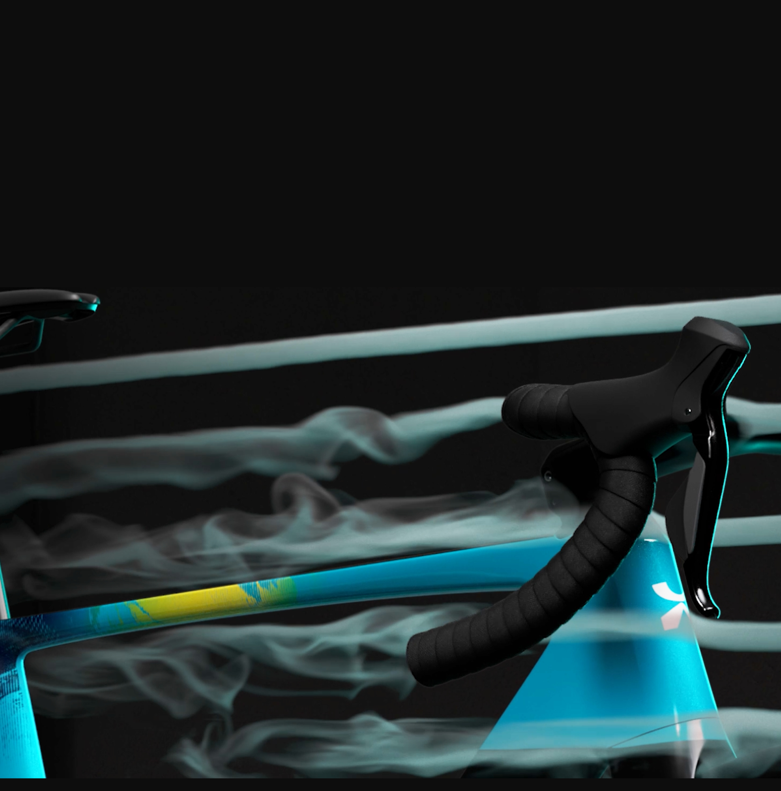
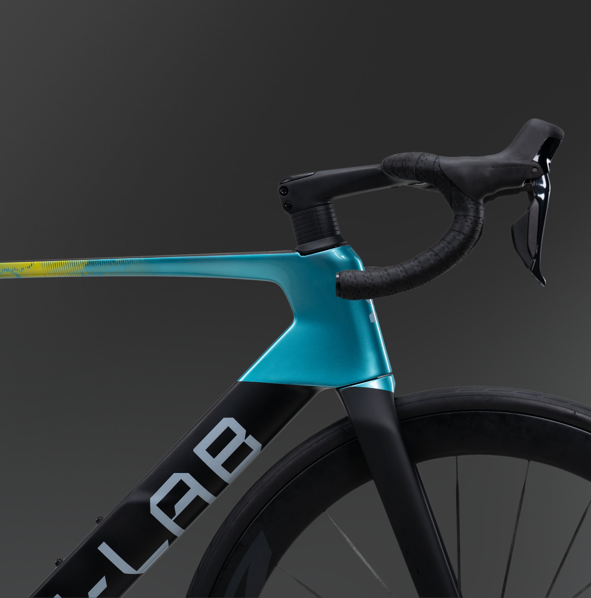
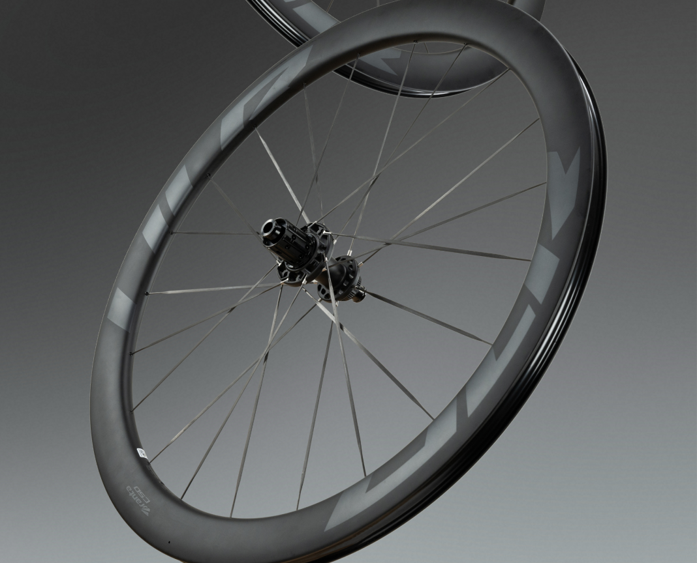

Aerodynamics
Lower resistance at race speed
Frame profiles, cockpit integration and wheel matching reduce drag, turning race validation into a concrete product advantage for AERO models.
X-LAB technology is explained through airflow, carbon layup, wheelset structure and validation evidence, so riders and partners can see how race speed becomes repeatable product value.
The story follows the PPT logic: performance technology must support consumer trust, dealer confidence and distributor decision-making at the same time.

Frame profiles, cockpit integration and wheel matching reduce drag, turning race validation into a concrete product advantage for AERO models.

Self-developed carbon cloth stacking controls fiber direction, stiffness zones and material intake for lighter, stronger and more consistent frames.

One-piece carbon wheelset construction improves rolling efficiency and lateral stiffness while staying aligned with the complete bike's aerodynamic target.
Technical content should never sit as decoration. Every claim connects to manufacturing control, WorldTour use or a dealer-facing proof object.
Show how aero tube shapes, cockpit integration and rim profile reduce drag.
Explain Toray carbon selection, layup schedule and stiffness control.
Connect frame, wheelset and component integration to complete-bike behavior.
Make fatigue, stress, batch and race validation visible before conversion.